Murciélago (Fledermaus): fünf Vokale in einem einzigen Wort.
Platzhalter · Bild folgt (Prompt 1.1-A)
¡Mur-cié-la-go! ¡Tiene a, e, i, o, u!
¡Nico, me da igual! ¡Sácalo de aquí!
murciélago Fledermaus · me da igual ist mir egal · ¡sácalo! schaff ihn raus!
In einem SatzSpanische Vokale sind wie Klaviertasten: Jede der fünf klingt immer gleich. Nichts wird gedehnt, nichts verschluckt – auch nicht das e am Ende: noche endet klar wie „Bett“.
Fünf Tasten
a
e
i
o
u
klingt wie
a in „Mann“
e in „Bett“
i in „Kino“
o in „Post“
u in „Mut“, nie ü
Beispiele
casa, mamá, Ana
leche, mesa, Pepe
sí, Nico, Lima
no, foto, ocho
uno, tú, música
Así suena también Das s am Silbenende wird in Andalusien, auf den Kanaren und in der Karibik oft gehaucht oder verschluckt: los amigos klingt dann wie „lo’ amigo’“.
Das Alphabet: 27 Buchstaben, eins davon ist das ñ
Aa
Bbe
Cce
Dde
Ee
Fefe
Gge
Hhache
Ii
Jjota
Kka
Lele
Meme
Nene
Ñeñe
Oo
Ppe
Qcu
Rerre
Sese
Tte
Uu
Vuve
Wuve doble
Xequis
Yye
Zzeta
¿Cómo se escribe? – Ele, u, ce, i con tilde, a.Wie schreibt man das? – L-U-C-Í-A.
In einem SatzVokale tanzen. a, e, o sind die Starken, i und u die Leichten. Ein Leichter mit einem Starken – oder zwei Leichte – tanzen eng: eine Silbe. Zwei Starke wollen beide führen und tanzen allein: zwei Silben.
Eng getanzteine Silbe
Leicht + stark
bue-no, a-gua, sie-te, ai-re, Eu-ro-pa
Leicht + leicht
ciu-dad, muy, rui-doLärm
Allein getanztzwei Silben
Stark + stark
le-o, pa-e-lla, Bil-ba-o
Akzent auf i oder u
Der Akzent macht den Leichten stark: dí-a, Lu-cí-a, pa-ís, Ra-úl
Ojo · AchtungLies, was dasteht – nicht deutsch. eu ist e + u, nie „oi“: euro klingt „e-uro“, nicht „Oiro“. ei ist e + i, nie „ai“: seis, reina. ie ist i + e, kein langes i: siete, Diego.
Drei Wörter, die man sich merkt
hay · ahí · ¡ay!es gibt · dort · au! – hay und ¡ay! klingen gleich (ai), ahí hat zwei Silben (a-í).Son seis euros.Das macht sechs Euro.¡Buenos días, ciudad!Guten Morgen, Stadt!
In einem SatzDas c hat zwei Gesichter. Vor e und i ist es weich wie das englische th in „think“ – genau wie das z. Vor a, o, u ist es hart: ein k. Ein deutsches „ts“ gibt es nie.
Ojo · AchtungDeutsche Augen lesen z und ce als „ts“ wie in „Cäsar“. Nie! Cerveza klingt „ther-BE-tha“. Und das s bleibt immer scharf, auch vorn: sí klingt wie „ßi“.
Así suena tambiénSeseo: In ganz Lateinamerika, auf den Kanaren und in weiten Teilen Andalusiens klingen z und ce, ci wie ein scharfes s – cerveza wie „serbesa“, casa und caza gleich. Ceceo: In Teilen Andalusiens klingt umgekehrt auch das s wie th.
¿Un bocadillo de «yamón»? Lo siento, no sé qué es eso.
Ein Brötchen mit „Yamón“? Tut mir leid, ich weiß nicht, was das ist.
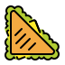
Platzhalter · Bild folgt (Prompt 1.4-A)
Un bocadillo de «yamón», por favor.
¿De… qué?
jamón Schinken – das j wie ch in „Bach“
In einem Satzj und g vor e und i kratzen kräftig wie ch in „Bach“. Vor a, o, u bleibt g ein g wie in „Garten“.
Was du siehst – was du hörst
Schreibung
klingt wie
Beispiele
ga · go · gu
g in „Garten“
gato, gol, gusto
ge · gi und j
ch in „Bach“, kräftig
gente, gigante, jamón, jefe
gue · gui
g, das u bleibt stumm
guerra, guitarra
güe · güi
g, und das u spricht mit
pingüino, vergüenza
In gue, gui hält das u als Leibwächter das g hart und schweigt. Zwei Punkte wecken es: pin-gü-i-no.
Ojo · AchtungDas j ist nie das j aus „ja“: Jamón ist kein „Yamón“, Juan kein „Yuan“.
Así suena también In der Karibik, in Mittelamerika, Kolumbien, auf den Kanaren und in Andalusien ist das j nur gehaucht wie ein deutsches h: jamón wie „hamón“.
In einem SatzDas spanische r macht die Zungenspitze, nie der Rachen. r heißt: einmal tippen. rr heißt: rollen wie ein kleiner Motor. Ein Tipp mehr – und aus pero (aber) wird perro (Hund).
Einmal tippenr
zwischen Vokalen
pero, cara, María
am Wortende – immer hörbar
Pilar, comer, hablar
nach Konsonant
tres, gracias, bravo
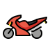
Rollenrr – und manchmal r
rr zwischen Vokalen
perro, arroz, Tierra
r am Wortanfang
Rafa, rojo, Roma
r nach l, n, s
Enrique, alrededor, Israel
Así suena también In Puerto Rico rollt das rr oft weiter hinten im Hals: carro. In den Anden und in Costa Rica werden r und rr oft gezischt, fast wie „rsch“.
Das Tippen kannst du schon: Sag ganz schnell „Edda, Edda, Edda“ – die Zungenspitze tippt einmal hinter die oberen Zähne. Das ist era. Fürs Rollen mach Nicos T-Rex nach: ¡drrrr! Erst mit d davor, dann ohne.
Ojo · AchtungDas deutsche Rachen-r klingt für Spanier wie ein j: Aus Rosa wird „Josa“. Und das r am Ende bleibt hörbar: Pilar, nicht „Pila“.
In einem Satzb und v sind Zwillinge: Sie klingen gleich, wie ein deutsches b – nie wie w oder f. Und zwischen zwei Vokalen legen sich b, d und g aufs Sofa: Sie werden weich und lässig.
Hart oder auf dem Sofa?
Wo?
klingt wie
Beispiele
b, v
b in „Bus“; zwischen Vokalen weich
vino, también · uva
d am Anfang, nach n und l
d in „Dach“
día, Dani, cuando, falda
d zwischen Vokalen
weich wie th in engl. „this“
nada, todo, adiós
g zwischen Vokalen
weich, nur gehaucht
agua, amigo, lago
Así suena también In Andalusien und im lockeren Gespräch fällt das d zwischen Vokalen oft ganz weg: cansado → „cansao“, todo → „to“.
b oder v? Hören hilft beim Schreiben nicht. Eine sichere Regel gibt es: Nach m steht immer b, nach n immer v – también, hombre, aber invierno, enviar.
Ojo · AchtungVino klingt wie „bino“, nie wie „Wino“. Und in Madrid ist das d am Ende fast weg: „Madri“.
In einem SatzDiese Buchstaben tragen Kostüm: Sie sehen anders aus, als sie klingen. Kennst du das Kostüm, liest du sofort richtig.
Wer steckt im Kostüm?
Schreibung
klingt wie
Beispiele
ll · y
j in „ja“; y allein und am Ende: i
calle, yo, playa · y, hoy, muy
ñ
gn in „Champagner“
España, mañana, niño, año
ch
tsch in „Tschüss“
chico, noche, churros
h
nichts – immer stumm
hola, hotel, ahora, hay
que · qui
k, das u bleibt stumm
queso, quince, Quique
Ojo · AchtungDie Welle auf dem ñ ist kein Schmuck: año heißt Jahr, ano heißt After. ¡Feliz cumpleaños! ohne ñ wünscht etwas ganz anderes.
Así suena también Fast überall klingen ll und y gleich (Yeísmo). Am Río de la Plata klingen beide wie „sch“: calle „casche“, yo „scho“. In Teilen der Anden und in Paraguay klingt ll noch anders als y, etwa wie „lj“.
papá Papa · el Papa der Papst · papas Kartoffeln (Lateinamerika, Kanaren)
In einem SatzJedes spanische Wort hat eine laute Silbe. Wo sie liegt, verrät meist das Wortende. Wo die Regel nicht stimmt, steht ein Akzent wie ein Warnschild: Hier, diese Silbe!
Zwei Regeln und ein Warnschild
Das Wort endet auf …
betont wird …
Beispiele
Vokal, -n oder -s
die vorletzte Silbe
casa, hablan, lunes, Carmen
anderen Konsonanten
die letzte Silbe
Madrid, hablar, Pilar, reloj
egal – die Regel passt nicht
die Silbe mit Akzent
café, papá, móvil, jamón, lápiz
Ein Akzent, ein anderes Wort
papa · papáPapst (oder Kartoffel) · Papahablo · hablóich spreche · er/sie sprachinglés · inglesEnglisch · Leisten – Hablo ingles geht also schieftu · tú el · él si · sídein · du der · er wenn · ja
Spikius Kniff · Drittletzte Silbe? Immer Akzent!Liegt die Betonung noch weiter vorn, auf der drittletzten Silbe, musst du nicht rechnen: Akzent, immer, ohne Ausnahme. música, teléfono, sábado, plátano.
In einem SatzEine spanische Frage ist oft ein normaler Satz – nur die Stimme macht sie zur Frage. Darum warnt vorne ein ¿: Gleich geht die Stimme hoch!
Gleiche Wörter, andere Melodie
Satz
Melodie
Was ist es?
Tienes hambre.
↘ fällt am Ende
Aussage: Du hast Hunger.
¿Tienes hambre?
↗ steigt am Ende
Ja-Nein-Frage: Hast du Hunger?
¿Dónde está Nico?
↘ fällt am Ende
Frage mit Fragewort: Wo ist Nico?
¡Qué hambre!
↗↘ hoch, dann runter
Ausruf: Was für ein Hunger!
Así suena también Auf den Kanaren, in der Karibik, in Mexiko und in Argentinien schwingt die Satzmelodie hörbar anders – in Buenos Aires zum Beispiel fast italienisch.
Das Warnschild steht da, wo die Frage beginnt
Lucía, ¿tienes un momento?Lucía, hast du kurz Zeit?Hola, mamá. ¡Qué sorpresa!Hallo, Mama. Was für eine Überraschung!
Ojo · AchtungKeine Umstellung wie im Deutschen nötig: Tienes hambre. → ¿Tienes hambre?
El agua, el mapa, el sofá: ¡el día es un desastre!
Das Wasser, die Landkarte, das Sofa: Der Tag ist eine Katastrophe!
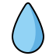
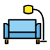
Platzhalter · Bild folgt (Prompt 2.1-A)
¡Dani! ¡El agua! ¡El sofá!
Tranquila. Tengo el mapa.
tranquila ruhig, keine Panik
In einem SatzJedes Nomen ist männlich (el) oder weiblich (la). Die Endung ist ein Namensschild: -o heißt fast immer el, -a fast immer la. Ein paar Rebellen tragen das falsche Schild.
Männlichel
-o, -aje, -or, viele Konsonanten
el libro, el viaje, el color, el móvil
Weiblichla
-a, -ción, -sión, -dad, -tad
la casa, la canción, la ciudad, la libertad
Die Rebellen
Rebell
Was ist los?
el día, el mapa, el problema
-a, aber männlich – wie viele auf -ma: el idioma, el tema
la mano, la foto, la moto
-o, aber weiblich (foto = la fotografía)
el agua
weiblich! Vor betontem a- steht aber el: el agua fría
Bei Menschen zählt das echte Geschlecht: el camarero – la camarera. Bei -e und -ista wechselt nur der Artikel: el/la estudiante, el/la turista.
Ojo · AchtungDeutsch hilft nicht: das Haus – la casa, der Tisch – la mesa. Lern jedes Wort mit Artikel.
In einem SatzWie im Deutschen aus zu dem „zum“ und aus von dem „vom“ wird, verschmelzen im Spanischen a + el → al und de + el → del. Nur mit el – mit allen anderen Artikeln nie.
+ el
+ la
+ los
+ las
a
al
a la
a los
a las
de
del
de la
de los
de las
Voy al cine. Voy a la playa.Ich gehe ins Kino. Ich gehe an den Strand.las llaves del cochedie Autoschlüssel (die Schlüssel des Autos)de lunes a viernes, del trabajo a casavon Montag bis Freitag, von der Arbeit nach Hause
Wo nichts verschmilzt
él mit Akzent heißt „er“
el regalo de élsein Geschenk (von ihm)
Namen mit großem El
el viaje a El Salvador · de El País
casa ohne Artikel = Zuhause
Voy a casa.Ich gehe nach Hause.
Ojo · AchtungErst das Genus prüfen, dann verschmelzen! „Zum Bahnhof“ heißt a la estación, denn estación ist weiblich. Und die Rebellen machen mit: el día → del día, el agua → al agua.
In einem SatzEin Etikett braucht keinen Artikel. Soy diseñadora sagt, was du bist – wie ein Namensschild. Sobald du mehr erzählst, kommt der Artikel zurück: Soy una diseñadora sin café.
Ohne Artikelwo Deutsch oft „ein“ sagt
Beruf, Herkunft, Religion
Soy profesor. Pilar es católica.
Ob überhaupt (tener, hay)
¿Tienes coche?Hast du ein Auto?
otro, medio, mil, ¡qué …!
otro café, mil euros, ¡qué día!
Mit Artikelauch anders als im Deutschen
Uhrzeit
Son las tres.Es ist drei.
Wochentage
el lunesam Montag
señor, señora + Name
La señora Pérez está aquí.
Ojo · Achtungotro steht nie mit un: „noch einen Kaffee“ heißt otro café, nicht un otro café. Genauso medio kilo (ein halbes Kilo).
En la novela · „El año de Lukas“
«Le trajo otro café, muy caliente, y una galleta.»
otro café – ganz ohne un. Der Keks ist neu im Bild: una galleta.
Jersey amarillo, bufanda amarilla, calcetines amarillos.
Gelber Pullover, gelber Schal, gelbe Socken.
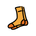
Platzhalter · Bild folgt (Prompt 3.1-A)
¡Jersey amarillo, bufanda amarilla!
Y perro amarillo. Gracias, Pilar.
el jersey Pullover · la bufanda Schal
In einem SatzDas Adjektiv ist ein Chamäleon: Es nimmt die Farbe seines Nomens an – männlich oder weiblich und Einzahl oder Mehrzahl. Immer, egal wo es steht.
Adjektiv endet auf …
el
la
los
las
-o
rojo
roja
rojos
rojas
-e
grande
grande
grandes
grandes
Konsonant
azul
azul
azules
azules
Herkunft, -or
español
española
españoles
españolas
un piso pequeño, una cocina pequeñaeine kleine Wohnung, eine kleine KücheLas gafas de Pilar son enormes.Pilars Brille ist riesig. (gafas ist Plural)unos niños felicesglückliche Kinder (z → c wie in Gramática A · 2.2)Lucía y Dani están cansados.Lucía und Dani sind müde. Gemischt? Männlich.
Ojo · AchtungIm Deutschen bleibt das Adjektiv nach „ist“ nackt: Die Küche ist klein. Im Spanischen nie: La cocina es pequeña. Und die Rebellen aus Gramática A · 2.1 bleiben, was sie sind: el agua fría, la mano fría.
Dani ist ein großartiger Mann. Na ja … ein großer Mann.
Platzhalter · Bild folgt (Prompt 3.2-A)
Te presento a Marta, una vieja amiga.
¡Oye! ¿Vieja yo?
te presento a darf ich vorstellen · ¡Oye! He!
In einem SatzNach dem Nomen sortiert das Adjektiv: welches?el coche rojo, la comida italiana. Das ist der Normalfall. Vor dem Nomen wertet es oder schwärmt: ¡Qué buena idea! Zahlen stehen auch davor: el primer día. Und manchmal ändert sich die Bedeutung.
In einem SatzVergleichen ist eine Waage: más … que (mehr als) und menos … que (weniger als) lassen sie kippen, tan … como (so … wie) hält sie im Gleichgewicht.
Madrid es más grande que Sevilla.Madrid ist größer als Sevilla.El metro es menos caro que el taxi.Die U-Bahn ist billiger als das Taxi.Dani es tan tranquilo como su perro.Dani ist so ruhig wie sein Hund.Es el piso más caro de Madrid.Die teuerste Wohnung Madrids. (der/die …-ste: el/la más …)
Vier Abkürzungen
bueno → mejor
besser
La paella de Dani es mejor.
malo → peor
schlechter
El tráfico es peor que ayer.
grande → mayor
älter
Doña Carmen es mayor que Pilar.
pequeño → menor
jünger
Nico es el menor de la familia.
Ojo · Achtung„Als“ = que, „wie“ = como. Mit Zahlen aber: más de cincuenta años. Und „mein großer Bruder“ = mi hermano mayor.
Die Paella ist superlecker. Und der Kellner … sieht superlecker aus.
Platzhalter · Bild folgt (Prompt 3.4-A)
Está buenísimo…
¿El arroz? ¡Sí, riquísimo!
el arroz der Reis
In einem Satz-ísimo ist der Lautstärkeregler ganz rechts: muy caro ist teuer, carísimo ist „Bist du verrückt?“.
Adjektiv
-ísimo
Was passiert?
caro, buena
carísimo, buenísima
Vokal weg, Endung dran – sie passt sich an
fácil
facilísimo
Konsonant bleibt
rápido
rapidísimo
nur ein Akzent: der auf dem í
rico, largo
riquísimo, larguísimo
c → qu, g → gu: Der Klang bleibt
El piso es pequeñísimo y carísimo.Die Wohnung ist winzig und sündhaft teuer.Estoy cansadísima.Ich bin todmüde.
Ojo · AchtungNie doppelt: muy carísimo geht nicht. Und Vorsicht: La paella está buenísima = superlecker. El camarero está buenísimo = sehr attraktiv.
Así se dice en … · So klingt es woandersMit súper klingt es ganz jung: súper caro, súper rico – in Spanien wie in Lateinamerika. In Argentinien hörst du auch re-: rebueno.
– Wie geht’s? – Sehr gut, danke. „Muy bueno“? Vorsicht!
Platzhalter · Bild folgt (Prompt 3.5-A)
¿Qué tal, Jonas?
¡Muy bueno, gracias!
Ya lo veo, hijo.
ya lo veo das sehe ich
In einem SatzZwei Paare, zwei Fragen. muy oder mucho? „Sehr“ oder „viel“. bueno oder bien? „Was für ein …?“ oder „Wie?“
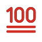
muy · muchosehr oder viel?
muy – sehr; bleibt immer gleich
muy caro, muy tarde, muy bien
mucho – viel; passt sich an
mucho café, mucha gente, muchas gracias
nach dem Verb: mucho
Me gusta mucho.Das gefällt mir sehr.
bueno · bienwas für ein oder wie?
bueno – was für ein? passt sich an
un buen libro, la comida es buena
bien – wie? bleibt immer gleich
Estoy bien. Hablas muy bien.
Spikius Kniff · muy steht nie am EndeFrag dich: Folgt noch ein Adjektiv oder Adverb? Dann muy. Steht nichts mehr dahinter, nimm mucho: —¿Te gusta? —Sí, mucho. Darum heißt auch „Ich mag dich sehr“ Me gustas mucho – das Deutsche sagt „sehr“, das Spanische „viel“.
Ojo · AchtungEstoy bien = Mir geht’s gut. Estoy bueno = Ich bin heiß (attraktiv). Soy bueno = Ich bin ein guter Mensch. Jonas aus dem Cartoon lernt das gerade.
Ich bin Lucía, ich bin in Madrid und ich habe ein Problem.
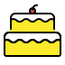
Platzhalter · Bild folgt (Prompt 4.1-A)
¿Quién es el culpable?
¡Yo no! ¡Es él!
el culpable der Schuldige
In einem SatzDie Verbendung verrät schon, wer es ist. Darum lässt man das Pronomen meist weg. Es ist ein Zeigefinger: nur für Kontrast und Nachdruck.
einer
mehrere
yo · soy
ich bin
nosotros, -as · somos
wir sind
tú · eres
du bist
vosotros, -as · sois
ihr seid
él, ella · es
er, sie ist
ellos, ellas · son
sie sind
usted (Ud.) · es
Sie sind
ustedes (Uds.) · son
Sie sind
Soy Lucía. Tengo 32 años.Normal: ohne. Die Endung reicht.Yo soy de Madrid, él es de Bilbao.Kontrast: mit Zeigefinger.—¿Quién tiene hambre? —¡Yo!Ohne Verb: mit Zeigefinger.Es tarde.Es ist spät. (Für „es“ gibt es kein Wort.)
tú oder usted? In Spanien duzt man fast alle. usted ist für Respekt (ältere Unbekannte, Ämter) und nimmt die Form von él: usted es. Gemischte Gruppen sind männlich: drei Frauen und Nico sind ellos.
Así se dice en … · So klingt es woandersIn Lateinamerika gibt es kein vosotros: ustedes gilt für alle Gruppen. In Argentinien und Uruguay sagt man statt tú meist vos, mit eigenen Formen („du bist“: sos). Wir bleiben bei tú und vosotros.
Meine Wohnung ist deine Wohnung. Mein Kühlschrank nicht.
Platzhalter · Bild folgt (Prompt 4.2-A)
Aquí tiene su cuenta.
¿Su cuenta? ¿De quién?
la cuenta die Rechnung
In einem SatzMein, dein, sein richten sich nach dem Ding, nicht nach dem Besitzer: mis gafas – eine Besitzerin, zwei Gläser. Und su ist ein Joker: sein, ihr oder Ihr.
ein Ding
mehrere Dinge
Deutsch
Beispiel
mi
mis
mein
mi móvil, mis llaves
tu
tus
dein
tu piso, tus amigos
su
sus
sein, ihr, Ihr
su perro, sus hijos
nuestro, nuestra
nuestros, nuestras
unser
nuestra casa, nuestros vecinos
vuestro, vuestra
vuestros, vuestras
euer
vuestro coche, vuestras bicis
su – ein Wort, viele Besitzer
Pilar tiene un gato. Su gato es enorme.Pilar hat eine Katze. Ihre Katze ist riesig.Nico y sus dinosaurios.Nico und seine Dinosaurier.Señor Gómez, ¿es su coche?Herr Gómez, ist das Ihr Auto?
Ojo · AchtungSein oder ihr? Im Spanischen egal: Lucía y su madre, Dani y su madre. Wird es unklar, sag el coche de él · de ella · de usted. Und: tú du, tu dein.
Der hier nicht. Der da auch nicht. Der dort hinten!
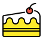
Platzhalter · Bild folgt (Prompt 4.3-A)
¿Este?
¡No! ¡Aquel!
In einem SatzSpanisch zeigt in drei Entfernungen: este – hier bei mir, ese – da bei dir, aquel – dort hinten, weit weg von uns beiden. Alle drei passen sich ans Ding an.
hier · aquíbei mir
este · esta · estos · estas
Este café está frío. Der Kaffee hier ist kalt.
da · ahíbei dir
ese · esa · esos · esas
¿Es nueva esa chaqueta? Ist die Jacke (an dir) neu?
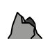
dort · allíweit weg
aquel · aquella · aquellos · aquellas
¿Quién es aquel chico? Wer ist der Typ dort hinten?
Für Dinge ohne Namen: esto, eso, aquello (nie vor einem Nomen)
¿Qué es esto?Was ist das (hier)?Eso no es mi problema.Das ist nicht mein Problem.¿Eso? Es un regalo para mamá.Das da? Ein Geschenk für Mama.
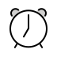
Auch die Zeit hat Entfernungen. Was jetzt ist, ist este: esta noche heute Abend, este fin de semana dieses Wochenende. Was lange her ist, ist aquel: en aquella época damals.
Ojo · AchtungAllein bleibt das Wort gleich, ohne Akzent: —¿Qué bolso? —Ese. Und für Unbekanntes nie este: ¿Qué es esto?
In einem SatzJedes Verb hat einen Stamm – der trägt die Bedeutung – und eine Endung – die sagt, wer es tut. Den Stamm behältst du, die Endung tauschst du aus: hablo, hablas, hablamos.
Drei Familien, ein System
hablarsprechen
comeressen
vivirleben, wohnen
yo
hablo
como
vivo
tú
hablas
comes
vives
él, ella, usted
habla
come
vive
nosotros, -as
hablamos
comemos
vivimos
vosotros, -as
habláis
coméis
vivís
ellos, ellas, ustedes
hablan
comen
viven
Drei Abkürzungen: yo endet immer auf -o. Bei -ar steckt ein a in der Endung, bei -er und -ir ein e. Und -ir zeigt sein i nur bei nosotros und vosotros: vivimos, vivís.
Los domingos como con mi madre.Sonntags esse ich bei meiner Mutter. (Gewohnheit)Espera, hablo por teléfono.Warte, ich telefoniere gerade. (jetzt)Mañana trabajo en casa.Morgen arbeite ich von zu Hause. (bald)Aprendo español desde enero.Ich lerne seit Januar Spanisch. (seit)
Ein ganz normaler Tag
De lunes a viernes trabajo en una agencia de diseño. Llego tarde, bebo dos cafés y contesto cuarenta correos. Mi jefe, Rafa, habla mucho y escucha poco. A las dos, Marta y yo comemos en el bar de abajo. Por la tarde dibujo, diseño y miro el móvil. A las seis llama mi madre. Siempre a las seis. ¿Y tú? ¿Trabajas mucho? ¿Comes bien?
Von Montag bis Freitag arbeite ich in einer Designagentur. Ich komme zu spät, trinke zwei Kaffee und beantworte vierzig Mails. Mein Chef Rafa redet viel und hört wenig zu. Um zwei essen Marta und ich in der Bar unten. Nachmittags zeichne ich, gestalte und schaue aufs Handy. Um sechs ruft meine Mutter an. Immer um sechs. Und du? Arbeitest du viel? Isst du gut?
Kein einziges yo – die Endung sagt alles. Marta y yo steht nur da, damit man weiß, wer mit wem isst.
Ojo · AchtungDie vosotros-Formen tragen einen Akzent: habláis, coméis, vivís. Und für Fragen brauchst du keine neue Form, nur eine steigende Melodie: ¿Hablas alemán? Im Deutschen dreht man um („Sprichst du …?“), im Spanischen nicht.
In einem SatzBei manchen Verben dehnt sich der Vokal im Stamm, sobald die Betonung auf ihm liegt: e→ie, o→ue, e→i. Bei nosotros und vosotros liegt die Betonung auf der Endung – da bleibt alles normal.
quererwollen; lieben
poderkönnen
pedirbestellen, bitten
yo
quiero
puedo
pido
tú
quieres
puedes
pides
él, ella, usted
quiere
puede
pide
nosotros, -as
queremos
podemos
pedimos
vosotros, -as
queréis
podéis
pedís
ellos, ellas, ustedes
quieren
pueden
piden
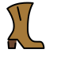
Umrande die veränderten Formen: Sie bilden einen Stiefel. yo, tú, él, ellos stecken drin, nosotros und vosotros stehen draußen.
¿Puedes repetir, por favor?Kannst du das bitte wiederholen?No entiendo.Ich verstehe nicht.¿Cuánto cuesta?Wie viel kostet das?Quiero un café con leche, por favor.Ich hätte gern einen Milchkaffee.La película empieza a las nueve. ¿Y Dani?Der Film fängt um neun an. Und Dani?
Die Nacht vor dem großen Termin
Son las dos de la mañana. Quiero dormir, pero no puedo. Todo el barrio duerme. Yo no. Pienso en el trabajo, en Rafa, en la factura de la luz. Cierro los ojos y cuento ovejas. A las tres empiezo a contar dinosaurios, como Nico. A las cuatro vuelvo a mirar el móvil. A las siete suena el despertador. ¿Y ahora? Ahora sí puedo dormir.
Es ist zwei Uhr morgens. Ich will schlafen, aber ich kann nicht. Das ganze Viertel schläft. Ich nicht. Ich denke an die Arbeit, an Rafa, an die Stromrechnung. Ich schließe die Augen und zähle Schafe. Um drei fange ich an, Dinosaurier zu zählen, wie Nico. Um vier schaue ich wieder aufs Handy. Um sieben klingelt der Wecker. Und jetzt? Jetzt kann ich schlafen.
Alle markierten Formen stehen bei yo oder él – also im Stiefel. Darum dehnt sich überall der Vokal.
Ojo · AchtungMan sieht es dem Verb nicht an. Gute Wörterbücher schreiben es dazu: pensar (ie), dormir (ue), pedir (i) – lern es gleich mit. Und der Infinitiv bleibt immer gleich: repetir, nie repitir.
En la novela · „El año de Lukas“
«¿Tres días? ¡No puedo! Mañana tengo una cita muy importante.»
Lukas ist erkältet, die Ärztin verordnet drei Tage Bett. Er hat aber ein Date – und puedo ist sein Protest.
In einem SatzDie wichtigsten Verben sind die frechsten – aber fast alle gehören zu einem von zwei Clubs: zum Go-Club (tengo, hago, salgo) oder zum Oy-Club (soy, estoy, voy).
Ojo · Achtung¡Ya voy! heißt „Ich komme schon!“. Wer zu jemand anderem hingeht, nimmt ir; venir gilt nur für den Ort, an dem der Sprecher ist: ¿Vienes a mi fiesta?Kommst du zu meiner Party?
Ein Plan für Freitag
Los viernes salgo de la oficina a las seis. Tengo un plan: no hago nada. Pongo el móvil en silencio, estoy en pijama a las siete y veo una serie. A las siete y cuarto llama Dani: —¿Vienes? Vamos a un concierto. —No, gracias. Tengo planes. —¿Qué planes? —No hago nada. Es un plan muy serio. —Vale. Entonces vengo yo y traigo pizza. Dani llega dos horas después. Sin pizza.
Freitags gehe ich um sechs aus dem Büro. Ich habe einen Plan: Ich mache nichts. Ich stelle das Handy auf lautlos, bin um sieben im Schlafanzug und schaue eine Serie. Um Viertel nach sieben ruft Dani an: „Kommst du? Wir gehen auf ein Konzert.“ – „Nein, danke. Ich habe Pläne.“ – „Was für Pläne?“ – „Ich mache nichts. Das ist ein sehr ernster Plan.“ – „Okay. Dann komme ich und bringe Pizza mit.“ Dani kommt zwei Stunden später an. Ohne Pizza.
Grün: der Go-Club und seine Stiefel-Verwandten. Rot: estar, ver, ir – Oy-Club und Einzelgänger. Alles andere ist regelmäßig.
Fünf kurze Sätze, die du täglich sagst
No sé.Ich weiß nicht.Tengo hambre.Ich habe Hunger.¿Qué haces?Was machst du (gerade)?Te digo una cosa…Ich sag dir mal was …¡Ya voy!Ich komme schon!
En la novela · „El año de Lukas“
«¿Paraguas? Yo tengo tres. Soy gallega.»
Carmen, Lukas’ Mitbewohnerin, sagt selten mehr als drei Sätze am Tag – und braucht dafür beide Clubs.
In einem SatzReflexive Verben sind Verben mit Spiegel: Die Handlung kommt zu dir zurück. Das Spiegelwort steht vor dem Verb: me ducho. Ohne Spiegel trifft es jemand anderen.
levantarseaufstehen
acostarseins Bett gehen
yo
me levanto
me acuesto
tú
te levantas
te acuestas
él, ella, usted
se levanta
se acuesta
nosotros, -as
nos levantamos
nos acostamos
vosotros, -as
os levantáis
os acostáis
ellos, ustedes
se levantan
se acuestan
Mit Spiegelfür mich selbst
Me ducho.Ich dusche. Me despierto.Ich wache auf.
Ohne Spiegelfür jemand anderen
Ducho a Tofu.Ich dusche Tofu. Despierto a Dani.Ich wecke Dani.
Ojo · AchtungIm Wörterbuch hängt das Spiegelwort hinten: levantarse. Viele Verben sind nur im Spanischen reflexiv: me llamo ich heiße, me quedo ich bleibe. Und beim Körper steht der Artikel: Me lavo el pelo, nicht mi pelo.
In einem Satzgustar heißt nicht „mögen“, sondern „gefallen“. Das Ding, das gefällt, bestimmt die Endung; die Person steht vorn: me gusta el café, me gustan los gatos.
wem gefällt’s?
ein Ding / ein Tun
mehrere Dinge
me · te · le · nos · os · les
gusta el café gusta bailar
gustan los gatos gustan las tapas
Spikius Kniff · Sag im Kopf „gefallen“Mir gefällt der Kaffee: Me gusta el café. Mir gefallen die Hunde: Me gustan los perros.Du gefällst mir: Me gustas. Darum ist ¡Me gustas! kein Lob fürs Essen, sondern eine Liebeserklärung.
Die Verwandten: encantar, doler, interesar
Me encanta el chocolate.Ich liebe Schokolade.Me duelen los pies.Mir tun die Füße weh.A mi madre le interesa todo. Sobre todo, mi vida.Meine Mutter interessiert sich für alles. Vor allem für mein Leben.
Ojo · AchtungNie yo gusto el café („Ich gefalle dem Kaffee“). Zum Betonen oder Klarstellen kommt a + Person davor: A mí me gusta, a él no.A Pilar le gusta opinar.
In einem SatzMit ser füllst du den Ausweis aus: wer oder was etwas ist. Mit estar postest du deinen Status: wie es dir gerade geht und wo du gerade bist.
Der Ausweisser
Wer? Was? Woher?
Name, Beruf, Herkunft Soy Lucía. Soy diseñadora. Dani es de Valencia.Dani kommt aus Valencia.
Wie ist er, sie, es?
Charakter, Aussehen, Material Mi madre es simpática. Y muy directa. La mesa es de madera.Der Tisch ist aus Holz.
Uhrzeit, Tag, Preis
Son las tres. Hoy es lunes. ¿Cuánto es?Was macht das?
Der Statusestar
Wie geht's gerade?
Gefühle, Gesundheit, Laune Estoy cansada. Nico está enfermo. ¿Qué tal estás?Wie geht's dir?
Wo?
Personen, Dinge, Orte Estoy en el baño.Ich bin im Bad. Toledo está cerca de Madrid.
Wie ist es gerade?
ein Zustand, der sich ändern kann El café está frío.Der Kaffee ist kalt. La puerta está abierta.
ser
soy · eres · es · somos · sois · son
estar
estoy · estás · está · estamos · estáis · están
Profil und Status
Mi perfil: Soy Lucía, soy de Madrid y soy diseñadora. Soy divertida y un poco caótica. Mi novio es Dani: es tranquilo y muy simpático. Mi estado hoy: Estoy en la oficina. Estoy cansada y nerviosa: el jefe está de mal humor, mi café está frío y Dani está… ¿Dónde está Dani?
Mein Profil: Ich bin Lucía, komme aus Madrid und bin Designerin. Ich bin lustig und ein bisschen chaotisch. Mein Freund ist Dani: Er ist ruhig und sehr nett. Mein Status heute: Ich bin im Büro. Ich bin müde und nervös: Der Chef hat schlechte Laune, mein Kaffee ist kalt und Dani ist … Wo ist Dani?
Das Profil stimmt auch nächstes Jahr noch. Der Status ist morgen schon ein anderer.
Ein Wort, zwei Bedeutungen
mit ser
mit estar
Dani es aburrido.
Dani ist langweilig.
Dani está aburrido.
Dani langweilt sich.
Nico es listo.
Nico ist schlau.
Nico está listo.
Nico ist fertig.
El jefe es malo.
Der Chef ist böse.
El jefe está malo.
Der Chef ist krank.
Mi tío es rico.
Mein Onkel ist reich.
La paella está rica.
Die Paella schmeckt super.
Lucía es guapa.
Lucía ist hübsch.
¡Qué guapa estás hoy!
Du siehst heute toll aus!
Ojo · AchtungZwei Fallen. Ein Ereignis findet mit ser statt, auch an einem Ort: La fiesta es en casa de Dani. Und der Beruf bleibt ser, auch als Ferienjob: Este verano soy camarero. Ohne un, siehe Gramática A · 2.5.
Spikius Kniff · Der gerade-TestSetz im Deutschen gerade ein. Klingt der Satz normal, nimm estar: „Ich bin gerade müde“ → Estoy cansada. Klingt er absurd, nimm ser: „Ich bin gerade Spanierin“ → Soy española. Nur beim Ort musst du nicht testen: wo ist immer estar, auch wenn etwas seit tausend Jahren dort steht.
En la nevera hay tres yogures. ¿Dónde está mi cerveza?
Im Kühlschrank sind drei Joghurts. Wo ist mein Bier?
Platzhalter · Bild folgt (Prompt 6.2-A)
Perdone, ¿hay un banco por aquí?
¡Claro! Está aquí. Y es muy cómodo.
el banco die Bank (Geld) und die Sitzbank · cómodo bequem
In einem Satzhay macht Inventur: Was gibt es? está ist das Navi: Wo ist das, was du schon kennst?
Die Inventurhay – es gibt
Etwas Neues, Unbekanntes
En la plaza hay un banco.Auf dem Platz steht eine Bank.
Immer nur hay
Hay un problema. Hay muchos problemas. No hay pan.Es gibt kein Brot.
Das Naviestá, están – ist, sind
Etwas Bekanntes, Bestimmtes
El banco está en la plaza.Die Bank ist auf dem Platz.
Singular oder Plural
¿Dónde está mi móvil? Las llaves están en la mesa.
hay
un, una, unos, unas · dos, tres … · mucho, poco · pan, café (ohne Artikel)
está, están
el, la, los, las · mi, tu, su · este, esta · Lucía, Madrid
El gato está encima de la nevera.Die Katze ist auf dem Kühlschrank.Las llaves están debajo del sofá.Die Schlüssel sind unter dem Sofa.El gimnasio está al lado de casa. Por desgracia.Das Fitnessstudio ist gleich nebenan. Leider.
Ojo · AchtungDeutsch: steht, liegt, hängt. Spanisch: hay oder está. Nie hay el/la: El baño está al fondo.
Ich kann nicht reden, Mama. Ich fahre gerade Auto.
Platzhalter · Bild folgt (Prompt 6.3-A)
Hola, cariño. ¿Estás durmiendo?
No, mamá. Estoy hablando contigo.
durmiendo schlafend · contigo mit dir
In einem SatzDas Präsens ist dein Stundenplan: was du normalerweise machst. estar + -ando/-iendo ist der Livestream: was genau jetzt passiert.
Dani trabaja en un banco.Dani arbeitet bei einer Bank. (Stundenplan)Ahora no puede hablar: está trabajando.Gerade kann er nicht reden: Er arbeitet. (Livestream)Nico está comiendo pasta… con las manos.Nico isst gerade Nudeln … mit den Händen.
Ojo · AchtungDas Gerundium ändert sich nie: Lucía está cansada, aber está trabajando. Zustände bleiben im Präsens: Tengo hambre, nicht estoy teniendo hambre. Und ¿Qué haces? kann auch „jetzt“ heißen – der Livestream betont: mittendrin.
In einem SatzFragewörter tragen immer einen Hut: den Akzent. Mit Hut fragen sie: ¿qué? ¿dónde? ¿por qué? Ohne Hut verbinden sie nur: que, donde, porque.
¿qué?
was?
¿Qué haces?
¿quién?, ¿quiénes?
wer?
¿Quién es ese chico?
¿dónde? ¿adónde?
wo? wohin?
¿Adónde vas?
¿cuándo? ¿cómo?
wann? wie?
¿Cuándo vuelves? ¿Cómo estás?
¿cuánto, -a, -os, -as?
wie viel(e)?
¿Cuántos años tienes?
¿cuál?, ¿cuáles?
welche(r, s)?
¿Cuál es tu número?
¿por qué?
warum?
—¿Por qué? —Porque sí.
Das Fragewort steht vorn, dann das Verb: ¿Dónde vive Pilar? Eine Präposition wandert mit: ¿Con quién vas?Mit wem gehst du? · ¿De dónde eres?Wo kommst du her?
Ojo · Achtung„Was ist deine Nummer?“ heißt ¿Cuál es tu número? Mit ¿Qué es…? willst du eine Erklärung: ¿Qué es una tapa? Vor einem Nomen steht qué: ¿Qué película vemos?
Ich weiß nichts, ich sehe nichts und ich kenne niemanden.
Platzhalter · Bild folgt (Prompt 7.2-A)
Nico, ¿dónde está la tarta?
No sé nada. No veo nada. ¡Aquí no hay nada!
la tarta die Torte
In einem SatzVor dem Verb steht ein Türsteher, der Nein sagt. Entweder no + Verb + Nein-Wort: No como nunca. Oder das Nein-Wort steht selbst vorn: Nunca como. Zwei Neins machen hier kein Ja.
Ja-Wort
Nein-Wort
So klingt es
algo etwas
nada nichts
No quiero nada.
alguien jemand
nadie niemand
Nadie me llama. = No me llama nadie.
siempre immer
nunca nie
Dani no llega nunca a tiempo.
algún, alguna irgendein
ningún, ninguna kein einziger
No tengo ningún problema.
también auch
tampoco auch nicht
—Yo no bailo. —Yo tampoco.
—¿Tienes hambre? —No, no tengo hambre.– Hast du Hunger? – Nein, ich habe keinen Hunger.No hablo nunca con nadie de nada.Ich rede nie mit jemandem über irgendwas.
Ojo · AchtungDeutsches kein ist meistens einfach no + Nomen ohne Artikel: No tengo tiempo.Ich habe keine Zeit.ningún nur mit Nachdruck: No tengo ningún problema.Ich habe überhaupt kein Problem.
Quedamos a las ocho. Dani llega a las nueve menos cuarto.
Wir sind um acht verabredet. Dani kommt um Viertel vor neun.
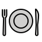
Platzhalter · Bild folgt (Prompt 7.3-A)
Dani, ¡son las nueve! ¡Quedamos a las ocho!
Tranquila, solo es una hora.
quedamos wir sind verabredet
In einem SatzBei der Uhrzeit denkt Spanisch la hora mit: es la (hora) una – ab zwei sind es mehrere Stunden: son las (horas) dos. Deshalb la/las und es/son.
treinta, treinta y uno … cuarenta, cincuenta, sesenta, setenta, ochenta, noventa
100–2026
cien, ciento uno, doscientos, quinientos, setecientos, novecientos, mil, dos mil veintiséis
1:00
Es la una.
2:15
Son las dos y cuarto.
2:00
Son las dos.
2:30
Son las dos y media.
2:10
Son las dos y diez.
2:45
Son las tres menos cuarto.
Ojo · Achtungcien nur bei genau 100, sonst ciento. ¿Qué hora es? fragt nach jetzt, ¿A qué hora…? nach dem Termin: A las diez. Datum ohne „am“, alles klein: Hoy es lunes, tres de mayo.
In einem Satzpara schaut nach vorn, aufs Ziel: Für wen? Wozu? por schaut zurück, auf den Grund: Warum? Und por geht hindurch: durch, über, pro.
paradas Ziel
Für wen?
Las flores son para ti.Die Blumen sind für dich.
Wozu? para + Infinitiv
Ahorro para comprar un coche. Ich spare, um ein Auto zu kaufen.
Bis wann?
El informe es para el lunes.
porder Grund, der Weg
Warum? Wofür danke?
Gracias por todo.Perdón por el retraso.
Wo entlang? Wo ungefähr?
Paseo por el parque.¿Hay un banco por aquí?
Wann, wie, pro, Tausch
por la mañana · por teléfono · 80 euros por noche
Für wen? Wozu?
Empfänger, Zweck, Frist
→ PARA
Warum? Wodurch?
Grund, Dank, Weg, Preis
→ POR
Spikius Kniff · Der wegen-TestWo du im Deutschen „für“ sagst, setz wegen ein. Passt es, nimm por: „Danke für den Kaffee“ – danke wegen des Kaffees → Gracias por el café. Passt eher „bestimmt für“ oder „um zu“, nimm para: Un café para Dani.
Ich liebe Dani. Aber ich will einen pünktlichen Freund.
Platzhalter · Bild folgt (Prompt 8.3-A)
Lucía, ¿quieres a Dani?
Sí, mamá. Quiero a Dani.
¡Y yo quiero pizza!
querer a alguien jemanden lieben · querer algo etwas wollen
In einem SatzFür Menschen rollt Spanisch einen roten Teppich aus: das a. Siehst, rufst, suchst oder liebst du eine Person, steht a davor. Vor Dingen nicht.
Mit TeppichPersonen, eigene Tiere
Menschen
Veo a Dani.Ich sehe Dani. Llamo a mi madre.Busco al camarero.
Tiere mit Namen
Quiero mucho a Tofu.
Frage: Wen?
¿A quién buscas?Wen suchst du?
Ohne TeppichDinge, Tiere allgemein
Dinge
Veo la tele.Llamo un taxi. Busco las llaves.Wie immer.
Irgendein Tier
Veo un perro en la calle.
Frage: Was?
¿Qué buscas?Was suchst du?
Ein a macht aus „wollen“ „lieben“
Quiero a mi abuela.Ich liebe meine Oma.Quiero un helado.Ich will ein Eis.
Ojo · AchtungKein Teppich nach tener und hay: Tengo dos hermanos.Hay un chico en la puerta. Ist die Person noch unbekannt und beliebig, fehlt das a oft auch: Necesito un médico.Irgendeinen. Und a + el = al: Llamo al médico.
¿Mi móvil? Lo tiene Nico. Y le doy un dinosaurio a cambio.
Mein Handy? Das hat Nico. Und ich gebe ihm dafür einen Dinosaurier.
Platzhalter · Bild folgt (Prompt 9.1-A)
¿Mi móvil? ¿Quién lo tiene?
Yo no lo tengo. Lo tiene el T-Rex.
In einem SatzPronomen sind Stellvertreter, damit du nichts zweimal sagen musst. lo, la stehen für das Paket: wen oder was? le steht für den Empfänger: wem?
Das Paketlo · la · los · las
Wen? Was?
¿El móvil? Lo tiene Nico.Das Handy? Das hat Nico. ¿La paella? La hace mi madre.Die Paella? Die macht meine Mutter.
Männlich oder weiblich – wie das Wort
¿Los billetes? Los tengo yo. ¿Las gafas? No las encuentro.Die Brille? Ich finde sie nicht.
Auch für Personen
¿Dani? Lo veo mañana.Dani? Den sehe ich morgen. Señora, la llamo luego.Ich rufe Sie später an.
Der Empfängerle · les
Wem?
Le doy un dinosaurio.Ich gebe ihm einen Dinosaurier. Les escribo un mensaje.Ich schreibe ihnen eine Nachricht.
Nur bei er, sie, Sie musst du entscheiden. me, te, nos, os passen immer: Te veo.Ich sehe dich.Te doy un beso.Ich gebe dir einen Kuss. Das Pronomen steht vor dem Verb: Lo tiene Nico. No la encuentro. Mehr zur Stellung in Gramática A · 9.3.
Der Empfänger kommt doppelt
A mi madre le compro flores.Meiner Mutter kaufe ich Blumen.Le digo la verdad a Dani.Ich sage Dani die Wahrheit.¿Le pregunto al camarero?Soll ich den Kellner fragen?
Klingt doppelt gemoppelt, ist aber ganz normal: Steht der Empfänger mit a im Satz, kommt le trotzdem dazu.
Ojo · AchtungDeutsch und Spanisch zählen nicht immer gleich. ayudar (helfen) und llamar (anrufen) wollen ein Paket: La ayudo. Ich helfe ihr. Dafür hat preguntar einen Empfänger: Le pregunto. Ich frage ihn.
lo kann auch einen ganzen Gedanken vertreten: No lo sé.Ich weiß es nicht.Ya lo veo.Seh ich schon.¡Lo siento!Tut mir leid!
Así se dice en … · So klingt es woandersIn Madrid und weiten Teilen Spaniens hörst du bei Männern oft le statt lo: A Dani le veo mañana. Dieser Leísmo gilt dort als korrekt – aber nur für männliche Personen, nie für Dinge oder Frauen. Mit lo und la liegst du überall richtig.
Den Schlüssel zu meiner Wohnung? Den gebe ich dir … morgen.
Platzhalter · Bild folgt (Prompt 9.2-A)
¿Y la llave de tu piso? ¿Me la das?
Claro, mamá. Te la doy… mañana.
In einem SatzZwei Pronomen? Erst der Empfänger, dann das Paket: melo, tela, noslos. Und aus le lo wird se lo.
¿El vino? Melo regala Rafa.Den Wein? Den schenkt mir Rafa.¿La contraseña? No tela digo.Das Passwort? Das sag ich dir nicht.¿Las fotos? Noslas manda Pilar. Todas.Die Fotos? Die schickt uns Pilar. Alle.¿El regalo? Selo doy a Pilar.Das Geschenk? Das gebe ich Pilar.
Aus le wird se
le / les + lo
le / les + la
le / les + los
le / les + las
se lo
se la
se los
se las
Spikius Kniff · Wer „le lo“ sagt, klingt lelolelo heißt auf Spanisch „doof, belämmert“. Damit das niemandem passiert, wird das erste le zu se: se lo, se la, se los, se las.
Ojo · AchtungIm Deutschen ist es umgekehrt: Ich gebe es ihm – Sache vor Person. Im Spanischen kommt die Person zuerst: selo doy. Weil se vieles heißen kann, sagst du bei Bedarf dazu, wer gemeint ist: Se lo doy a usted.
Mañana voy a empezar la dieta. Como todos los lunes.
Morgen fange ich mit der Diät an. Wie jeden Montag.
Platzhalter · Bild folgt (Prompt 10.1-A)
El lunes voy a ir al gimnasio. En serio.
¿Qué lunes?
In einem SatzVoy a comer – „ich gehe zu essen“: Du bist schon unterwegs. So sprichst du über Pläne und über das, was du kommen siehst.
ich
du
er, sie, Sie
wir
ihr
sie, Sie
voy a
vas a
va a
vamos a
vais a
van a
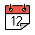
Der Planwas du vorhast
Pläne und Absichten
Este verano voy a aprender a nadar.Diesen Sommer lerne ich schwimmen.
vamos a … = lass uns …
¡Vamos a pedir una pizza!Lass uns eine Pizza bestellen!
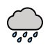
Die Vorahnungwas gleich passiert
Man sieht es kommen
Mira esas nubes. Va a llover.Schau dir die Wolken an. Gleich regnet es. ¡Cuidado, Nico! ¡Te vas a caer!Vorsicht, Nico! Du fällst gleich hin!
Wann?
mañana, esta noche, el sábado, la semana que viene, el año que viene
Ojo · AchtungDas kleine a nicht vergessen: Voy a comer, nicht voy comer. Pronomen vorne oder hinten (Gramática A · 9.3): Lo voy a comprar = Voy a comprarlo.
Eines Tages werde ich an einem Strand leben. Mit WLAN.
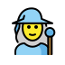
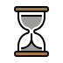
Platzhalter · Bild folgt (Prompt 10.2-A)
Conocerás a un hombre que siempre llegará tarde.
Ya lo conozco. Se llama Dani.
In einem SatzDas Futur ist die Kristallkugel: Vorhersagen, Versprechen, Träume – Te llamaré. Und so einfach: ganzer Infinitiv plus Endung, für alle Verben gleich.
Spikius Kniff · Das Futur als AchselzuckenEine Vermutung? Nimm das Futur – auch für jetzt, wie das deutsche „wohl“: ¿Dónde está Dani? – Estará en el metro.Er wird wohl in der U-Bahn sein.
Ojo · AchtungFür feste Pläne sagen Spanier meist ir a (Gramática A · 10.1). Das Futur klingt ferner: Algún día Dani llegará a tiempo.
In einem SatzDas Perfekt ist ein Doppelpack, der zusammenklebt: haber + Partizip – hecomido. Für Vergangenes, das noch zu heute gehört.
hablarsprechen
comeressen
vivirleben, wohnen
yo
he hablado
he comido
he vivido
tú
has hablado
has comido
has vivido
él, ella, usted
ha hablado
ha comido
ha vivido
nosotros, -as
hemos hablado
hemos comido
hemos vivido
vosotros, -as
habéis hablado
habéis comido
habéis vivido
ellos, ustedes
han hablado
han comido
han vivido
hecho, dicho, visto, puesto, vueltoRebellen: von hacer, decir, ver, poner, volverescrito, abierto, roto, muerto, sidoRebellen: von escribir, abrir, romper, morir, ser
¿Ya has hablado con tu madre?Hast du schon mit deiner Mutter gesprochen?Hoy no he hecho nada. Nunca he estado tan bien.Heute habe ich nichts gemacht. Mir ging es nie so gut.
Ojo · AchtungNichts passt dazwischen: No lo he visto. Auch bei „sein“ nimmst du haber: He ido – ich bin gegangen.
Gestern habe ich mit ihr gesprochen. Heute spreche ich mit ihrem Anwalt.
Platzhalter · Bild folgt (Prompt 11.2-A)
¡Pago yo!
Tarde, cariño. Ya pagué yo.
pagar bezahlen · tarde zu spät
In einem SatzDie Betonung ist der Zeitstempel: hablo – ich spreche (jetzt), habló – er sprach (vorbei). Der Strich auf der Endung schiebt alles in die Vergangenheit.
hablarsprechen
comeressen
vivirleben, wohnen
yo
hablé
comí
viví
tú
hablaste
comiste
viviste
él, ella, usted
habló
comió
vivió
nosotros, -as
hablamos
comimos
vivimos
vosotros, -as
hablasteis
comisteis
vivisteis
ellos, ustedes
hablaron
comieron
vivieron
-er und -ir teilen sich die Endungen. hablamos, vivimos klingen wie im Präsens. Bei yo ändert sich oft die Schreibung: pagué, busqué, empecé.
El sábado Nico comió arena en la playa.Am Samstag hat Nico am Strand Sand gegessen.En 2019 mis padres me escribieron… un fax.2019 haben mir meine Eltern geschrieben … ein Fax.
Ojo · AchtungOhne Strich wechseln Person und Zeit: tomo (ich nehme) – tomó (er nahm). Und mit ayer nie Perfekt: Ayer hablé.
Ich bin an den Strand gefahren. Es war ein Fehler.
Platzhalter · Bild folgt (Prompt 11.3-A)
¡Cariño! ¿Qué tal las vacaciones?
Fui a la playa. Fue un error.
In einem SatzDie Unregelmäßigen sind eine Bande: jeder mit eigenem Stamm, alle mit denselben Endungen, keiner mit Akzent – tuve, hice, pude. Und ser und ir teilen sich alles: fui.
tenerhaben
hacermachen
ser · irsein · gehen
yo
tuve
hice
fui
tú
tuviste
hiciste
fuiste
él, ella, usted
tuvo
hizo
fue
nosotros, -as
tuvimos
hicimos
fuimos
vosotros, -as
tuvisteis
hicisteis
fuisteis
ellos, ustedes
tuvieron
hicieron
fueron
estar → estuve
poder → pude
poner → puse
saber → supe
querer → quise
venir → vine
decir → dije
traer → traje
Ojo · Achtungtuve, nie tuvé. hizo mit z. Nach j fällt das i weg: dijeron. Und dar geht wie ein -er-Verb, ohne Strich: di, dio.
Ohne Handys – wie haben sich die Leute damals verabredet?
Platzhalter · Bild folgt (Prompt 11.4-A)
De pequeña, Lucía comía tierra. ¡Todos los días!
¡Mamá! ¡Tenía dos años!
tierra Erde
In einem SatzDas Imperfecto ist ein Fotoalbum: Jedes Bild zeigt, wie es war oder was man immer machte. Passieren tut nichts. (In Gramática A · 11.5 wird daraus die Bühne.)
hablarsprechen
comer · viviressen · wohnen
sersein
yo
hablaba
comía
era
tú
hablabas
comías
eras
él, ella, usted
hablaba
comía
era
nosotros, -as
hablábamos
comíamos
éramos
vosotros, -as
hablabais
comíais
erais
ellos, ustedes
hablaban
comían
eran
Nur drei Ausreißer: ser, ir (iba) und ver (veía). Bequemer geht’s nicht.
De pequeño, Dani iba al cole en bici. Y llegaba tarde.Als Kind fuhr Dani Rad zur Schule. Und kam zu spät.Mi primer piso tenía una ventana y tres cucarachas.Meine erste Wohnung: ein Fenster, drei Kakerlaken.Mi abuela tenía ochenta años y conducía como una loca.Oma war achtzig und fuhr wie eine Verrückte.
Ojo · Achtung„Es gab“ heißt había, auch bei Mehrzahl: Había muchos turistas – nie habían.
Ich stand gerade ganz entspannt unter der Dusche, als das Handy klingelte.
Platzhalter · Bild folgt (Prompt 11.5-A)
Me duchaba. Hasta que llamaste tú.
¡Hola, cariño! ¿Qué hacías?
cariño Schatz
In einem SatzErzählen ist Theater. Das Imperfecto baut die Bühne: wie es war und was gerade lief. Das Indefinido ist die Handlung: was passierte und die Geschichte weiterbringt.
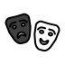
Die BühneImperfecto
Wie es war
Zeit, Wetter, Ort, Aussehen, Alter, Gefühle Eran las siete y llovía. Estaba nerviosa. Tenía veinte años.
Was gerade lief
Me duchaba…Ich duschte gerade … Los niños dormían.Die Kinder schliefen.
Was immer so war
De pequeña, pasaba los veranos en el pueblo. Als Kind war ich jeden Sommer im Dorf.
Die HandlungIndefinido
Was passierte
…cuando sonó el móvil.… als das Handy klingelte. Ayer perdí las llaves.Gestern habe ich die Schlüssel verloren.
Eins nach dem anderen
Abrí la puerta, vi el desastre y llamé a mi madre. Ich öffnete die Tür, sah das Chaos und rief meine Mutter an.
Was ein klares Ende hat
Viví tres años en Sevilla. La reunión duró cuatro horas.Leider.
Kleine Wegweiser
Imperfecto
siempre, todos los días, antes, de pequeño, normalmente, mientras
Indefinido
ayer, anoche, el lunes, en 2019, una vez, de repente, entonces
Die Frage, die fast immer hilft
Wie war es?
Beschreibung, Hintergrund, Gewohnheit
→ IMPERFECTO
Und dann?
Ereignis, nächster Schritt
→ INDEFINIDO
Beides zusammen: so klingt eine Geschichte
Era lunes y llovía. Yo estaba nerviosa: era mi primer día en la oficina. En el metro, la gente leía o dormía. Llegué a las nueve en punto, abrí la puerta… y vi a mi exnovio. Era mi nuevo jefe.
Es war Montag und es regnete. Ich war nervös: Es war mein erster Tag im Büro. In der U-Bahn lasen oder schliefen die Leute. Ich kam pünktlich um neun an, öffnete die Tür … und sah meinen Ex. Er war mein neuer Chef.
Die Bühne steht, bis jemand die Tür öffnet. Dann übernimmt die Handlung. Und der letzte Satz? Er ist die Pointe, aber trotzdem Bühne: Er beschreibt, wer der Mann war.
Ojo · AchtungDie Wegweiser helfen, entscheiden tut die Bedeutung. Ayer llovía cuando salí de casa. – Ayer steht da, und trotzdem ist der Regen Bühne. Und lange Dauer heißt nicht automatisch Imperfecto: Viví tres años en Sevilla ist abgeschlossen, also Handlung.
Spikius Kniff · Vier Verben wechseln die BedeutungIm Indefinido erzählen diese Verben den Moment, in dem etwas anfing oder geschah: conocía kannte – conocí lernte kennen · sabía wusste – supe erfuhr · tenía hatte – tuve un hijo bekam ein Kind · no quería wollte nicht – no quise weigerte mich.
En la novela · „El año de Lukas“
«Esa mañana llegó una carta. Una carta de verdad, en un sobre, con sello y con aquella letra grande y azul que Lukas conocía tan bien.»
Der Brief kommt an – Handlung. Die Schrift kennt Lukas schon lange – Bühne.
¿Has estado alguna vez en México? —Sí, fui en 2019.
Warst du schon mal in Mexiko? – Ja, 2019.
Platzhalter · Bild folgt (Prompt 11.6-A)
¿Has ido al gimnasio esta semana?
¡Claro! Fui el lunes… a pagar la cuota.
la cuota der Mitgliedsbeitrag
In einem SatzIst die Zeitschachtel noch offen (heute, diese Woche, im Leben)? Dann Perfekt: he ido. Ist sie zu (gestern, 2019)? Dann Indefinido: fui.
Die Schachtel ist offenPerfekt
Heute, diese Woche, dieses Jahr
Esta mañana he desayunado churros. Este año he cambiado de trabajo dos veces.
Im Leben, bis jetzt
¿Has estado alguna vez en México? Nunca he montado en camello.
Die Schachtel ist zuIndefinido
Gestern, letzte Woche, letztes Jahr
Ayer desayuné churros. Otra vez. El año pasado cambié de trabajo.
Mit Datum oder „vor …“
Sí, fui en 2019. Con mi madre. Pilar llamó hace tres días.
Ojo · AchtungDeutsch: „Gestern habe ich Paella gegessen.“ Spanisch: ayer schließt die Schachtel – Ayer comí paella, nie ayer he comido.
Así se dice en … · So klingt es woandersIn Lateinamerika (und auf den Kanaren) geht die Schachtel schneller zu: Was vorbei ist, steht meist im Indefinido – auch heute. Madrid: ¿Ya has comido? Hoy he comido tacos. Mexiko: ¿Ya comiste? Hoy comí tacos. Beides ist richtig, nur nicht in derselben Stadt.
Kommen Sie herein und setzen Sie sich bitte! – Nico, komm her!
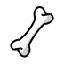
Platzhalter · Bild folgt (Prompt 12.1-A)
Siéntese, por favor.
¡Nico, siéntate! ¡Y deja el esqueleto!
In einem SatzFür tú nimmst du die er-Form des Präsens: habla, come, escribe. Für usted tauschst du den Vokal: hable, coma, escriba. Höflich heißt: Der Vokal wechselt die Seite.
tú= er-Form des Präsens
Auch mit Stammwechsel
¡Coge el móvil!Geh ans Handy! ¡Cierra la puerta!¡Vuelve pronto!
usted-ar → e · -er/-ir → a
Basis ist die yo-Form
Pase, por favor.Treten Sie ein. tengo → tenga · hago → haga
venir
tener
poner
salir
hacer
decir
ir
ser
tú
ven
ten
pon
sal
haz
di
ve
sé
usted
venga
tenga
ponga
salga
haga
diga
vaya
sea
Pronomen kleben hinten dran (Gramática A · 9.3). Die Betonung bleibt, also kommt oft ein Akzent: ¡Siéntate! ¡Siéntese! ¡Cómpralo! ¡Dímelo! Kurze Wörter mit einem Pronomen brauchen keinen: dime, hazlo, ponlo.
En la novela · „El año de Lukas“
«Tome una pastilla cada ocho horas, beba mucha agua y descanse.»
Die Ärztin siezt Lukas: tomar → tome, beber → beba, descansar → descanse.
12.2Verneint (Vorschau auf den Subjuntivo) · 🌿 Stamm
¡No toques eso, Nico! ¡Y no te comas la plastilina!
Fass das nicht an, Nico! Und iss die Knete nicht!
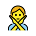
Platzhalter · Bild folgt (Prompt 12.2-A)
No comas tanto pan. No salgas tan tarde. No…
Mamá… ¡no me digas!
¡No me digas! Was du nicht sagst! (wörtl.: Sag mir nicht!)
In einem SatzBeim Verbot kommt der Gegenvokal: -ar → e, -er/-ir → a. ¡Come! – ¡No comas! Das ist schon Subjuntivo – hier als Vorschau.
¡Ja! (tú)
¡Nein! (tú)
¡Nein! (usted)
hablar
habla
no hables
no hable
comer
come
no comas
no coma
venir
ven
no vengas
no venga
decir
di
no digas
no diga
ir
ve
no vayas
no vaya
Spikius Kniff · usted + s = Verbot für túDie usted-Form aus Gramática A · 12.1 kennst du schon. Häng ein -s an, und du hast das Verbot für tú: venga → no vengas · sea → no seas · tenga → no tengas.
Ojo · AchtungPronomen wandern nach vorne: ¡Dímelo! → ¡No me lo digas!No comes heißt „Du isst nicht“ – kein Verbot. Schreibung: tocar → no toques.
Ich komme zu spät, weil Tofu meinen Schuh gefressen hat.
Platzhalter · Bild folgt (Prompt 13.1-A)
¡Mira, abuela! ¡Diplodocus y iguanodontes!
Diplodocus e iguanodontes, cariño.
e = y vor i- und hi-
In einem SatzSpanische Bindewörter schieben nichts herum. Deutsch: weil ich Hunger habe – das Verb rutscht ans Ende. Spanisch: porque tengo hambre – alles bleibt, wo es ist.
y
und
Dani y Tofu duermen. Siempre.
o
oder
¿Café o té? —Café. Mucho.
pero
aber
El piso es pequeño, pero tiene terraza.
porque
weil, denn
No como carne porque no me gusta.
cuando
wenn, als
Cuando llueve, Tofu no quiere salir.
Kleine Verwandlungen: y wird e, o wird u
padre e hijo · Lucía e Irenevor i- und hi- wird y zu esiete u ocho · uno u otrovor o- und ho- wird o zu uagua y hieloaber: hie- klingt wie „je“ – y bleibt
Ojo · Achtung¿Por qué? fragt (getrennt, mit Akzent), porque antwortet (zusammen, ohne): ¿Por qué llegas tarde? —Porque Tofu… Und cuando ist immer Zeit. „Wenn“ im Sinn von „falls“ heißt si: Si tienes tiempo, llámame.
El vecino que vive arriba toca la batería de noche.
Der Nachbar, der oben wohnt, spielt nachts Schlagzeug.
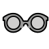
Platzhalter · Bild folgt (Prompt 13.2-A)
¿Ves al chico que lleva gafas? Me encanta.
¿El chico que está hablando con mi madre?
In einem Satzque ist der Universalkleber: Es ersetzt der, die, das, welche – für Menschen und Dinge, Einzahl und Mehrzahl. Für Orte gibt es donde. Und wieder bleibt das Verb vorne: el vecino que vive arriba – der Nachbar, der oben wohnt.
La tarta que hizo Pilar está buenísima.Die Torte, die Pilar gemacht hat, ist superlecker.Los zapatos que compré ayer me hacen daño.Die Schuhe, die ich gestern gekauft habe, drücken.Es el bar donde conocí a Dani.Das ist die Bar, wo ich Dani kennengelernt habe.Madrid es la ciudad donde vivo… y donde nunca duermo.Madrid ist die Stadt, in der ich lebe … und nie schlafe.
lo que – das, was
Lo que necesito es un café.Was ich brauche, ist ein Kaffee.No entiendo lo que dice Nico. Habla en dinosaurio.Ich verstehe nicht, was Nico sagt. Er spricht Dinosaurisch.
Ojo · Achtungque fällt nie weg – anders als im Englischen (the shoes I bought): los zapatos que compré. Kein Akzent: que und donde verbinden, ¿qué? und ¿dónde? fragen. Und meist steht vor que kein Komma.
In einem Satztambién und tampoco sind Echos: también wiederholt ein Ja, tampoco wiederholt ein Nein. Wer widerspricht, sagt einfach sí oder no.
Jemand sagt …
Ich auch (nicht)
Ich nicht / ich schon
Tengo hambre.
Yo también.
Yo no.
No tengo hambre.
Yo tampoco.
Yo sí.
Me gusta el café.
A mí también.
A mí no.
No me gusta el café.
A mí tampoco.
A mí sí.
Spikius Kniff · Antworte im gleichen KleidSchau auf den Satzanfang. Beginnt er mit me (me gusta, me encanta, me duele), antwortest du mit a mí. Beginnt er mit dem Verb oder mit yo, antwortest du mit yo. Me encanta Nico. —A mí también. · Quiero un café. —Yo también.
Ojo · Achtung„Ich auch nicht“ ist nie también no, sondern tampoco. Im Satz gilt: tampoco vorne braucht kein no – Tampoco tengo tiempo oder No tengo tiempo tampoco.
Bei hablar, comer, vivir sind die Endungen rot: Sie sind das Muster für alle regelmäßigen Verben. Bei allen anderen Verben ist rot, was vom Muster abweicht. Imperativ: tú / usted.
hablarsprechen · Muster für alle regelmäßigen Verben auf -ar